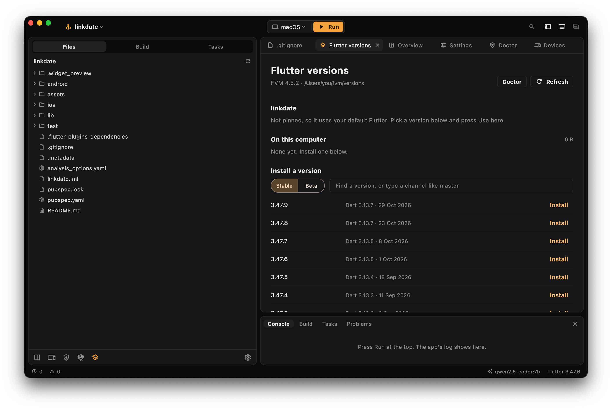
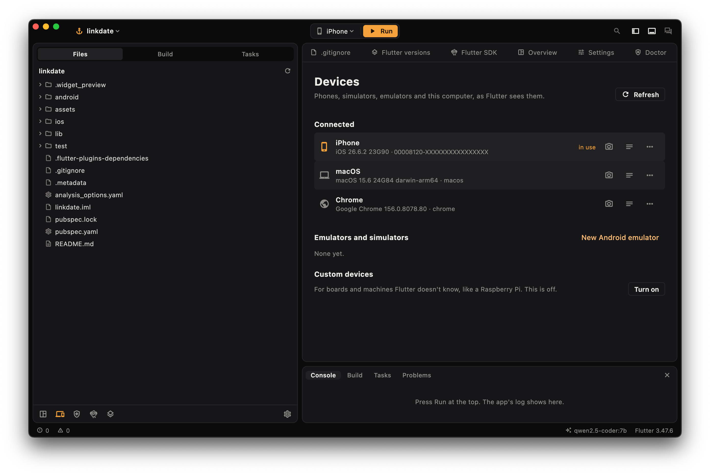
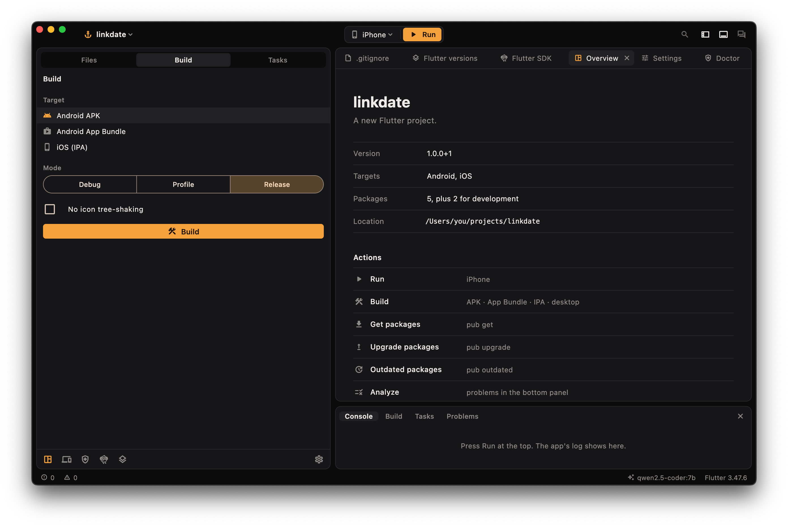

AI fixes that can't wreck your project
An AI once told us a problem was resolved right after it broke the project. So Deckhand checks the result itself.
- Saves a copyYour project's files are saved before any fix runs, with or without git.
- Makes the fixThe AI reads your files and makes exact edits. It has no terminal, stays in the project, and can't read
.envfiles or signing keys. - Checks itIf a config file no longer reads,
flutter pub getfails, or the same error comes back, your files go back automatically. - You can undoIf it worked, the change stays, with one click to undo it.
Use Claude, OpenAI, Gemini, OpenRouter, or a local model through Ollama, where nothing leaves your computer. It catches broken projects, not logic mistakes, so read what it changed.
Flutter versions, without the commands
A GUI for FVM. Install any Flutter release and pin one per project. Run, build and analysis all follow the project's .fvmrc, even after a git checkout changes it.

Every device in one place
Run on any device from the top bar. Take screenshots, read device logs, install, uninstall, attach to a running app, and start emulators.

Builds with no flags to remember
Android APK and App Bundle, iOS IPA, macOS, Windows and web, in debug, profile or release, with the log right below.

And the rest of the Flutter tool
- Flutter doctor as a checklist
- Channels, upgrade, downgrade and precache
- New project form
- Analyzer problems: click to jump to the line
- File tree and code viewer with tabs
- Tests, translations, format and
dart fix - Integration tests and
flutter drive - Widget previews and crash symbolizing
- Coding agents like Claude Code and Aider, with the same safety net
- Command palette and go to file
Run it
You need Flutter 3.47 or newer.
git clone https://github.com/iammcoding/deckhand
cd deckhand
flutter run -d macos